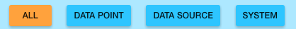
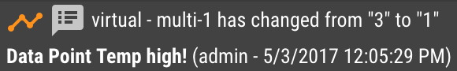

The Events Page allows you to view a table of all Events (also known as Alarms)
that are stored in the system. You can sort the table by clicking a column header. The arrow next to a header will show which column
the table is sorting by and whether it is ascending or descending.
You can filter the table by Event Type, Alarm Level, Active Status, and whether or not the event has been Acknowledged.

The Message column will show the message associated with the event. If the message is too long to fit on one line it will be
concatenated and shown with an ellipsis. You can click the concatenated message to have it expand to show the entire message.
You can also add notes to an event by clicking on the alarm level flag icon, , at the far left of the row. If an event has notes added to it a notes icon will be shown to the left of its message. You can click the concatenated message to expand to show notes.

The Status column represents the current status of the alarm. You can filter on status using the Active Status dropdown at the top of the table.
The filter options are: Any, Active, Returned to normal and N/A (Instantaneous) (meaning the event doesn't "Return to Normal").
Note that when an alarm returns to normal the time at which it happened will be shown in the Status column.
The Duration column represents the total time between the alarm start and when it Returned To Normal.
If the alarm is still active this time represents the alarm start until now.
The Acknowledge column represents if an alarm has been acknowledged or not. An empty green circle icon, , will
display for unacknowledged events and it will be filled in with a green checked icon, , if the alarm is acknowledged.
You can acknowledge a single event by clicking the empty green circle icon and it will show the check mark after it
becomes acknowledged.
You can acknowledge all events that
match the current filter by clicking the Acknowledge # Events button.
If you have any unacknowledged events in your system they will display in the
Header Bar under the Alarm Icon:
You can see the total count of unacknowledged events
as well as the breakdown by Alarm Level by clicking the Alarm Icon to expand the menu. Clicking any of these menu
items will open the Events Page with the filters automatically set to the chosen Alarm Level.
*Note: If you don’t see all the events in the table after clicking one of these menu items
the Date filter toggle switch may be enabled, and if so an event older than the selected
time range it won’t show up in the Events Table. By default this option will be turned off and events
will not be filtered by timestamp.